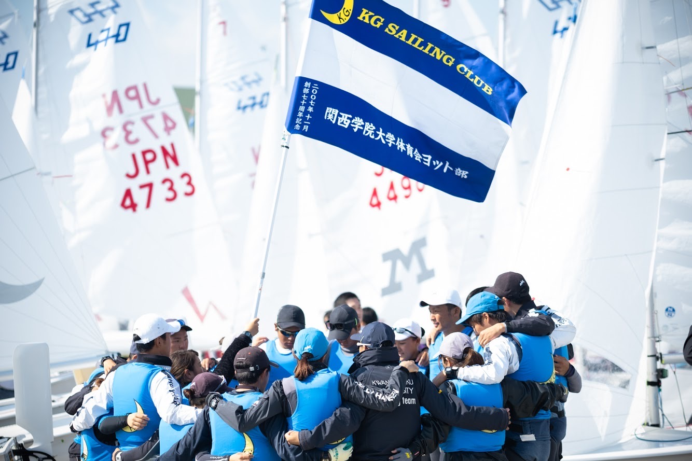
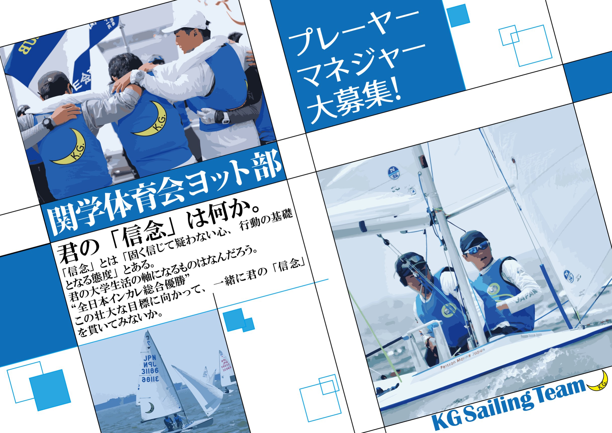
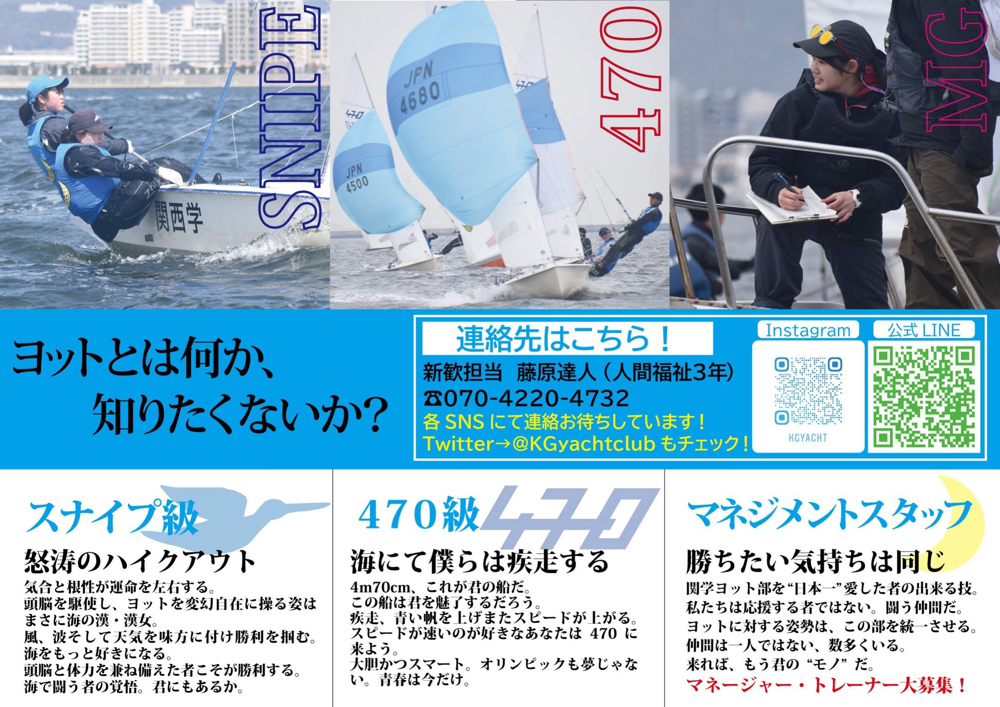

/ヨット部
関西学院大学体育会ヨット部は大学日本一を目指しています。
ヨットは男女混合スポーツで、未経験者でも全国で活躍できるスポーツなので現在は女子プレイヤーも多く、未経験者もチームメンバーの半分を占めています。
全国大会はもちろん、新人戦や女子選手権大会などさまざまな大会に参加しています。

また、マネージャー、トレーナーも大募集しています！【8～9月】
— 関西学院大学体育会ヨット部【公式】 (@KGyachtclub) April 4, 2020
夏休み期間ヨット部は毎週水～日、週5で活動しています！
夏の暑い海で風や波を感じながらのセーリングはまさにヨットの醍醐味です！⛵️🌊
夏練は全力でヨットだけに夢中になれる時期で、1年の中で1番濃い時間となります☺️
体験希望や質問があれば気軽にDMを送ってください！ #春から関学 pic.twitter.com/YYOP99e9O1
ぜひ1度ヨット部の体験にお越し下さい！ 体験希望や質問があれば気軽にご連絡、お待ちしております！ 関学ヨット部はプレイヤーだけでなく、マネージャーも大募集しています！
— 関西学院大学体育会ヨット部【公式】 (@KGyachtclub) April 3, 2020
マネージャーは海ではレスキューボートを運転しながら練習を運営し、陸ではご飯を作り栄養管理を行っています！
このチームに欠かせない存在である"マネージャー"となり、私たちと共に日本一を目指しませんか？#春から関学 pic.twitter.com/ThIeh72nrO
/活動日
毎週土曜、日曜日
/所属人数
30人
/質問会など
公式LINE、SNSのダイレクトメッセージでは常時質問を受け付けています。
インスタグラムでライブ配信をする予定もあります。
関西学院大学体育会ヨット部の公式LINEを作っています！⛵ これからたくさんの情報を載せていきます！
— 関西学院大学体育会ヨット部【公式】 (@KGyachtclub) April 11, 2020
ヨット部のことだけでなく、履修指導、学校の相談も受け付けてます！
ぜひ気軽にLINE追加してください！
DMなどの連絡もお待ちしております！✉ #春から関学 pic.twitter.com/4WetIzyOrp